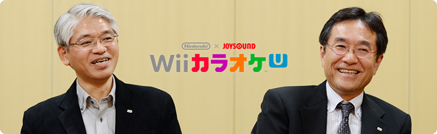

<div class="l-category-local-header">
<div class="category-local-header">
<div class="category-local-heading"><span>社長が訊く</span>
<div class="category-local-sub">IWATA ASKS


<div class="l-soft-topic-path is-block">
<div class="l-soft-topic-path-inner">
<div class="soft-topic-path">
<ul class="topic-path"><li class="topic-path-item"><span>『Wii U』 Nintendo×JOYSOUND Wii カラオケ U 篇</span></li></ul>


<div id="page-container">
<header class="interviewheader">
<h2 class="interviewheader__ttl"><span class="subtext">社長が訊く</span>『Wii U』</h2>

</header>
<div class="tabmenu-container">
<p class="tabmenu__ttl">シリーズ一覧
<ul class="tabmenu__body tabnum12">
<li class="tabmenu__item tab1">本体 篇</li>
<li class="tabmenu__item tab2">Wii U GamePad 篇</li>
<li class="tabmenu__item tab3">Miiverse プロデュース 篇</li>
<li class="tabmenu__item tab4">Miiverse 開発スタッフ 篇</li>
<li class="tabmenu__item tab5">インターネットブラウザー 篇</li>
<li class="tabmenu__item tab6">Wii U Chat 篇</li>
<li class="tabmenu__item tab7">New スーパーマリオブラザーズ U 篇</li>
<li class="tabmenu__item tab8">ZombiU（ゾンビU） 篇</li>
<li class="tabmenu__item tab9">Nintendo×JOYSOUND Wii カラオケ U 篇</li>
<li class="tabmenu__item tab10">Nintendo Land 篇</li>
<li class="tabmenu__item tab11">Nintendo TVii 篇</li>
<li class="tabmenu__item tab12">Wii Street U powered by Google 篇</li>
</ul>

<div class="hero-container">
<div class="hero__img">

<div class="interviewsubheader">
<div class="interviewsubheader__ttl"><h2>Nintendo×JOYSOUND Wii カラオケ U 篇</h2>

<div class="pageindex-container">
<p class="pageindex__ttl">目次
<ul class="pageindex__body">
<li class="pageindex__item">1. 撤退からのスタート</li>
<li class="pageindex__item active">2. 相手が戦えない土俵で</li>
<li class="pageindex__item">3. “曲を選ぶ楽しみ”</li>
<li class="pageindex__item">4. 「歌い込み」</li>
<li class="pageindex__item">5. 「記憶を探して」</li>
</ul>

<div class="interview-container">
<h3 class="interview__ttl">2. 相手が戦えない土俵で</h3>

中谷
: それでTAKERU撤退後、<br>「ソフトの自販機をどう変えていくか？」ということで、<br>教育機関の教材とか、仏教の経典とか、<br>通信で提供可能なコンテンツを探ったんですが、<br>どれも権利の許諾を得るのが難しかったんです。<br>そこで最終的に行き着いたのが「音楽」でした。<br>オリジナルの楽曲をＭＩＤＩ（※16）化すれば<br>著作隣接権（※17）が発生して、<br>一部利用できる権利を得られたんです。<br>この仕組みをしっかり組み立てれば、<br>ほぼＪＡＳＲＡＣさん（※18）の許諾だけで、<br>自社コンテンツとして動かすことができたんです。

※16ＭＩＤＩ＝Musical Instrument Digital Interface（電子楽器デジタルインターフェイス）。電子楽器の演奏データを機器間でデジタル転送するための世界共通規格。
※17著作隣接権＝著作権が著作物の創作者に与えられるものであるのに対して、著作隣接権は著作物の創作者ではないがその著作物の伝達に重要な役割を果たす実演家、レコード製作者、放送事業者、有線放送事業者などに認められる権利のこと。
※18ＪＡＳＲＡＣ＝「ジャスラック」と発音。社団法人日本音楽著作権協会のこと。楽曲の著作権を持つ作詞者、作曲者、音楽出版社などから著作権の信託を受けて、音楽の利用者に対する利用許諾（ライセンス）、利用料の徴収と権利者への分配を行う団体。音楽文化の振興に資する事業なども行う。


岩田
: 個別の権利者それぞれに交渉しなくても、<br>「音楽」なら、まとめてたくさんのコンテンツを<br>利用することができたんですね。


中谷
: はい。通信カラオケの試作品をつくって、<br>いろんなマーケットに持ち込みました。<br>たとえば「日本海最大のステージがある」<br>と聞いて、新潟のカラオケスナックに<br>遠征したりもしていました。


岩田
: ただ、世の中に存在しないものを<br>売り込みに行かれたので、<br>最初から順風満帆には<br>いかなかったんじゃないですか？


中谷
: そうです。<br>じつは一度、失敗しています。<br>最初につくった通信カラオケは<br>３，０００曲ほどのJS-1（※19）というモデルでした。<br>これは当時メジャーだったレーザーディスクの<br>カラオケと、曲数はほぼ同じなんです。<br>「場所を取らない」「新譜がすぐ入る」<br>「メンテナンスフリー」という<br>通信カラオケならではの特長を軸にしていたんですが、<br>最初はまったく売れませんでした。


※19JS-1＝通信カラオケ・コマンダ「JS-1」。１９９２年に発売。楽曲数約３，１００曲を搭載しており、業務用カラオケ事業の第一歩となった。


岩田
: それはなぜだったんでしょうか？


中谷
: じつは美空ひばりさんなどの<br>昭和４５年以前のメジャー曲は、<br>著作権法改定の都合で、<br>音源を取得できなかったんです。


岩田
: つまり、ＪＡＳＲＡＣさんの<br>許諾だけではダメな曲があって、<br>しかもそれが、カラオケにおける<br>「キラー楽曲」だったんですね。


中谷
: はい。ですので、いくら通信カラオケの<br>よさをうたっても・・・。


岩田
: キラーソフトが手に入らない<br>プラットフォームになってしまったんですね。<br>それって、まるでうまくいかないゲーム機と<br>同じじゃないですか（笑）。


中谷
: そうなんです、同じなんです（笑）。<br>そこで、メジャータイトルが入らないのであれば、<br>「シングルカットされていないアルバム曲を<br>　積極的に入れて差別化していこう」ということで、<br>急きょ、残りの資本金を全部つぎ込んで、<br>２，０００曲追加したJS-2（※20）というモデルを<br>約３か月後にスタートさせました。

※20JS-2＝通信カラオケ・コマンダ「JS-2」。１９９３年に発売。搭載楽曲数は５，０００曲を達成した。


岩田
: ３か月で、一気に２，０００曲も増やしたんですか。


中谷
: はい。これはもう、社運をかけていました。<br>カラオケボックスにデモ機を設置して、<br>搭載楽曲リストを印刷した小冊子をつくって<br>大々的に宣伝したところ、<br>翌日から待ち行列ができるぐらいで、<br>びっくりするほどオーダーが入ったんです。


岩田
: キラーコンテンツとされていた「楽曲」がなくても、<br>それ以外の選択肢が多数あるものを提供したら、<br>お客さんの層が一気に変わって、<br>そういう楽曲を必要としない、<br>ほかの選択肢を求めていた方たちが<br>一斉に集まってくれたわけですか・・・。


中谷
: そうなんです。<br>ちょうど世の中に「カラオケボックス」という<br>マーケットが起こるタイミングで、<br>カラオケボックスにくる学生さんやＯＬさんが<br>歌いたい曲にしぼって、２，０００曲追加したことが、<br>通信カラオケが一気に立ち上がる<br>原動力となりました。


岩田
: 確かに、従来のディスクチェンジャーを<br>使っているところは、一気に２，０００曲<br>追加することは難しいですよね。<br>チェンジャーをもう１台横に並べるしか<br>方法がありませんから。


伊神
: それとカラオケボックスにより、<br>従来の「１曲ワンコイン制」ではなく、<br>「時間貸しの料金システム」に変わったことで、<br>お客さんはより多くの歌を歌いたくなったんです。<br>通信カラオケはディスクチェンジャーに比べ、<br>「曲の切り替わりが圧倒的に速く、たくさん歌える」<br>というメリットも、支持を受けた要因でした。


中谷

: カラオケのマーケットには、<br>「ナイトマーケット」と「デイマーケット」<br>という２種類の業界特有の表現があるんですけど、<br>最初につくった通信カラオケは、<br>「ナイトマーケット」を狙ってしまったことが、<br>ミスマッチしていた原因だったんです。


岩田
: でも、きっと苦しまないと、<br>わからなかったことなんでしょうね。


中谷
: そう思います。<br>それにＪＡＳＲＡＣさんも最初からＯＫではなくて、<br>考えかたや使用料金形態がいまの形になるまで、<br>それこそ５年ほどの期間が必要でした。


岩田
: でも、こうして通信カラオケをキッカケに、<br>楽曲の権利者に許諾料が還元される<br>新しい仕組みができあがったんですね。


中谷
: はい。いまや日本のＪＡＳＲＡＣの使用料徴収額は<br>金額ベースでは世界一ですけど、<br>そのうちカラオケから入ってくる徴収区分が、<br>全体の約２割を占めるほどなんです。


岩田
: へぇ～、そんなにあるんですね。<br>ちなみに、カラオケのリモコンが<br>タッチパネルになったのはいつごろですか？


中谷
: 最初に登場したのは<br>「セガカラ」（※21）というモデルです。<br>そこからわれわれはJOYSOUNDで<br>「キョクナビ」（※22）として発展させました。

※21「セガカラ」＝セガ・ミュージック・ネットワークスが販売していた通信カラオケの機種名。
※22「キョクナビ」＝２００４年１１月、「キョクNAVI（JR-100）」としてスタートした、通信に無線ＬＡＮを使用した検索機能つき情報端末。タッチパネル操作により希望の曲をすばやく検索・選曲できる。


岩田
: どんどん曲が変わっていく<br>通信カラオケだからこそ、情報端末は<br>選曲本に比べてメリットがありますね。


中谷
: ただ、当時はまだタッチパネルに<br>なじみの薄いご年配の方向けに、<br>選曲本と「キョクナビ」の両方の運用をしていました。<br>いまでは薄い新譜本だけ出すようにしています。


岩田
: なるほど。なんというか、これは典型的な<br>「破壊的イノベーション（※23）物語」ですよね。<br>最初は質としては劣ったものではじまるけれど、<br>自らの武器や長所を一気に伸ばして、<br>「相手が戦えない土俵」をどんどんつくり、<br>勝負していったんですね。

※23破壊的イノベーション＝確立された技術やビジネスモデルによって形成された既存市場の秩序を乱し、業界構造を劇的に変化させてしまうイノベーション（まったく新しい発想）のこと。ハーバード大学ビジネススクールのクレイトン・クリステンセン（Clayton M. Christensen）教授が提唱した。


<li class="pagination-prev"><span>1. 撤退からのスタート</span></li>
<li class="pagination-next"><span>3. “曲を選ぶ楽しみ”</span></li>
</ul>
<div class="listbtn-container">
<p class="listbtn__item">社長が訊く 一覧

